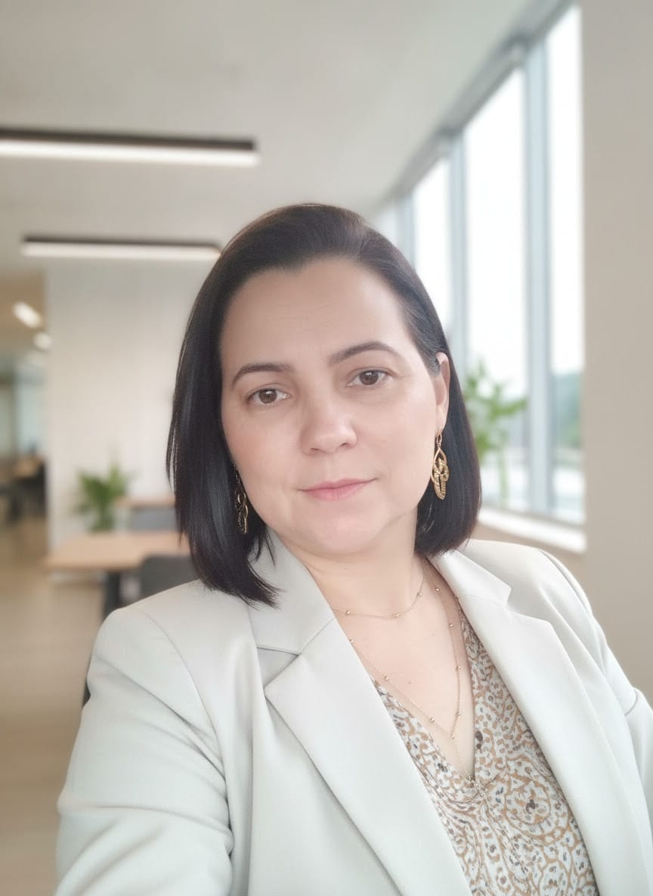

IdealizadoraFernanda Silva
Enfermeira obstétrica • Consultora em saúde
Especialista em Estratégia de Saúde da Família pela UNIFESP desde 2013.
Atuação na saúde pública e hospitalar, com experiência na assistência e na gestão.
Formação: Enfermagem Obstétrica